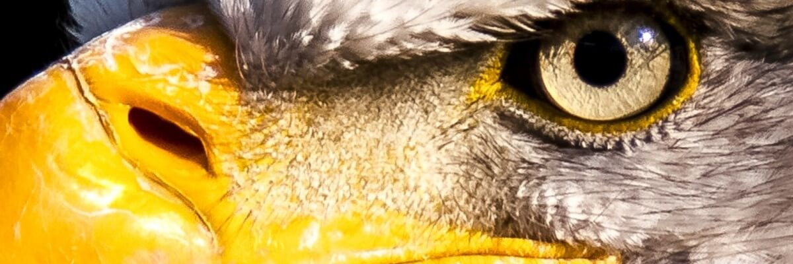
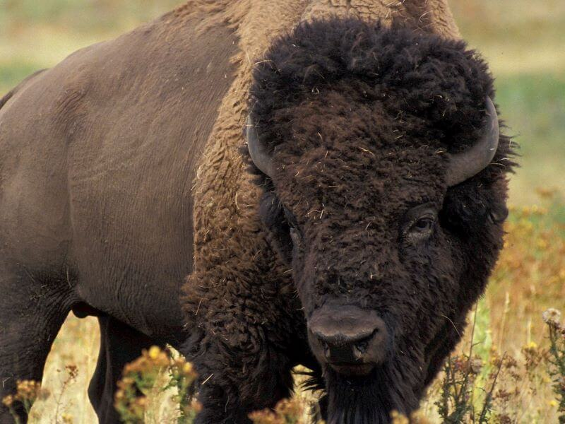
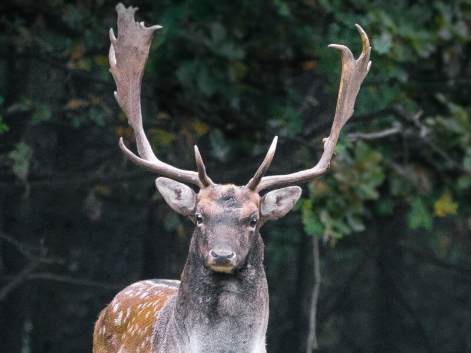
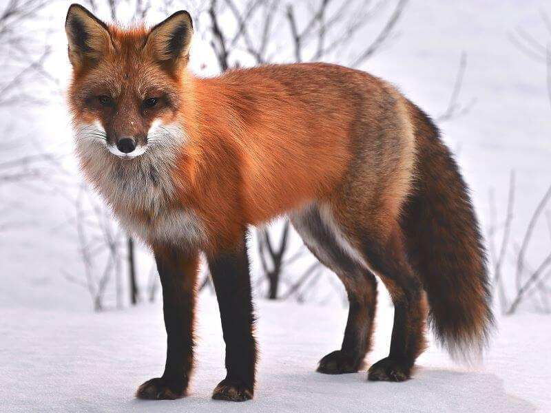
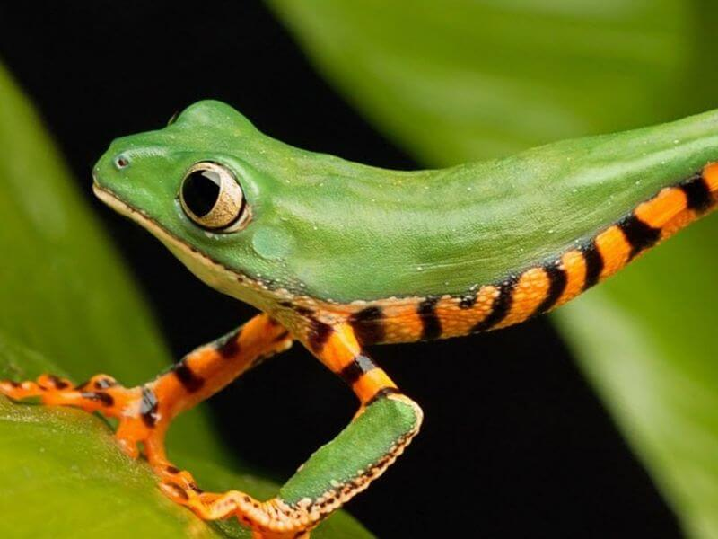
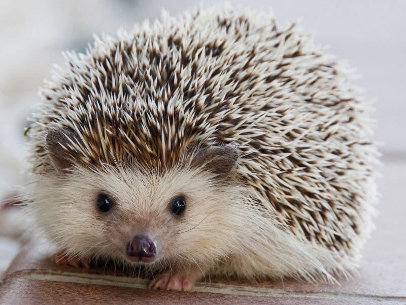
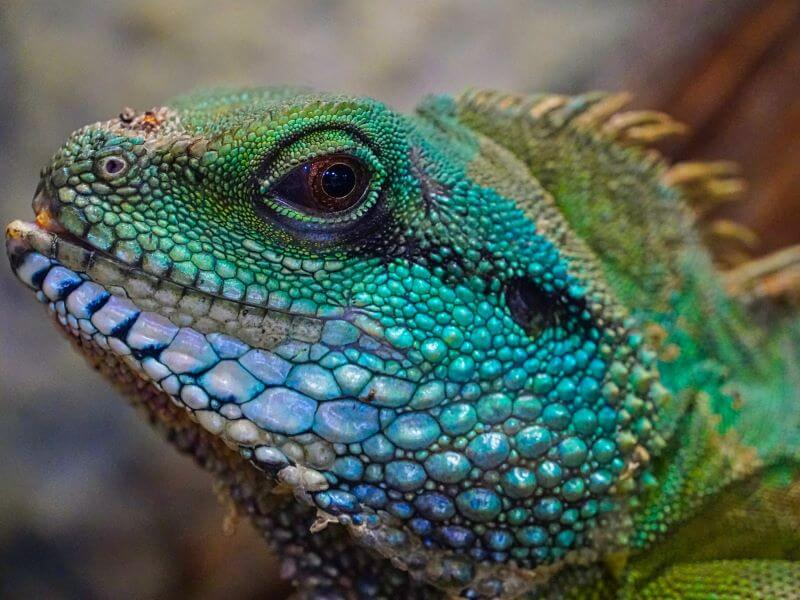
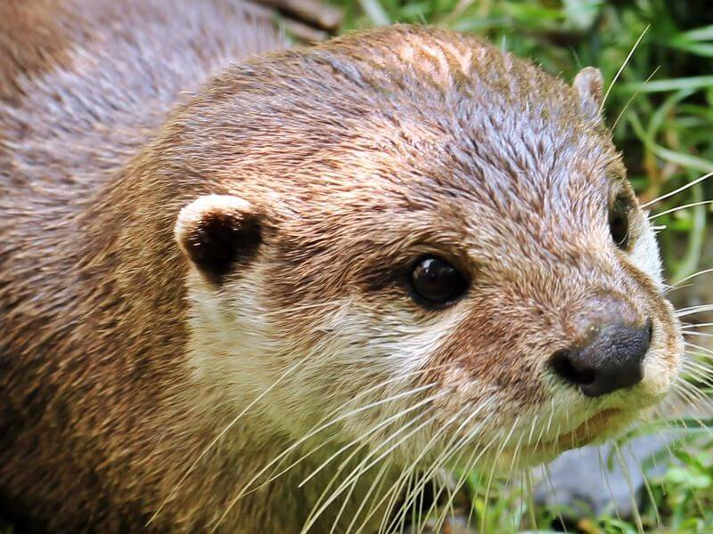

Every animal carries its own unique beauty, personality, and presence. Some may appear fierce, powerful, or untamed in the wild, yet through photography we are able to pause and appreciate the remarkable detail, emotion, and quiet elegance within each moment. This gallery was created to encourage viewers to slow down, carefully observe each photograph, and absorb the natural beauty these animals bring into our world. From piercing eyes and powerful stances to gentle expressions and vibrant colors, every image tells a story worth exploring.






